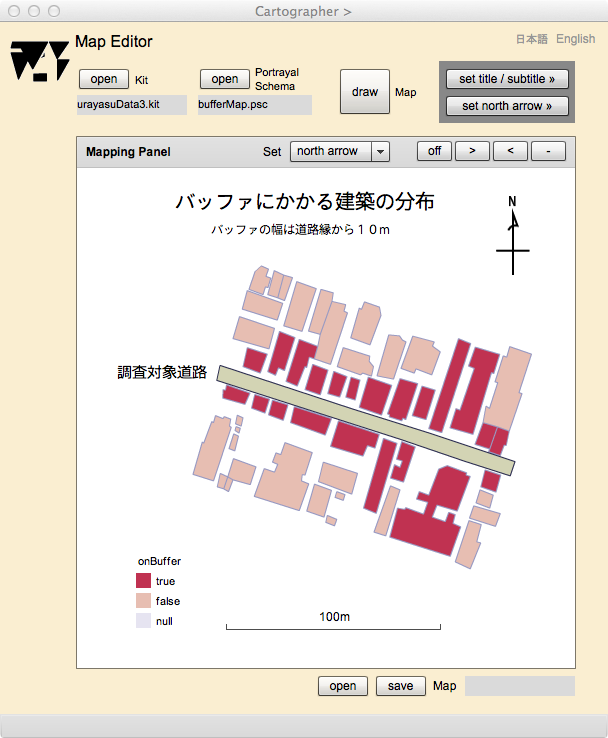

Map Editor（作成中）
地図編集
このページでは，描画辞書を指定することによって，同じキットから異なるスタイルの地図を表示することができます．将来は，地図のタイトル，方位，凡例，グリッド等，印刷図が備えているべき要素を加えて，レイアウトしたり，縮尺を指定して，プリントアウトができるようにしたいと考えていますので，ページのタイトルは地図編集にしてあります．
以下，このページの操作法を説明します．
Map Editorの操作画面

図１．Map Editorの操作画面
表示欄
Kit
地図表示を行うキットをオープンすると，ここにファイス名が表示されます．
Portrayal Dictionary
地図表示のための規則である，描画辞書をオープンすると，ここにファイル名が表示されます．
Mapping Panel
このパネルに描画辞書の規則に従った地図が表示されます．
ボタン
open (Kit)
キットをオープンします．
open (Portrayal Dictinary)
描画辞書をオープンします．
draw (Map)
Mapping Panelに地図を表示します．
>
このボタンを押すと表示縮尺が小さくなります．
<
このボタンを押すと，表示縮尺が大きくなります．
-
このボタンを押すと，表示される画面縮尺が，初期化されます．
on/off
このボタンを押すと，地図のドラッグが可能になり (on)，もう一度押すと不可能になります (off)．
スライダー
ベースマップの透明度を調整することができます．ベースマップの表示を目立たせないようにするときに，使用します．
日本語
今あなたが読んでいるドキュメントが表示されます．
English
You can read the tutorial written in English.